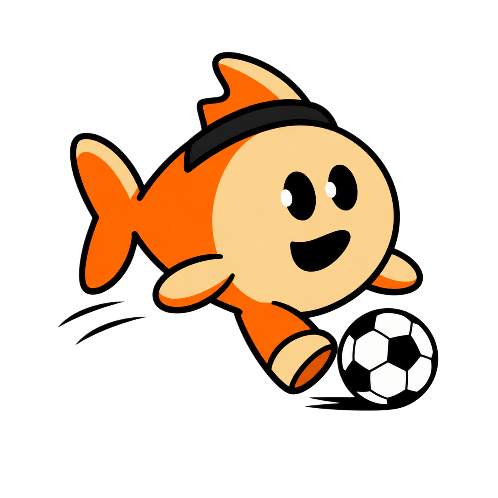

TinyFish Fantasy World Cup Companion
Ready
↺
⚙
Settings
Keys are stored locally in Chrome. Chat requests and relevant page context may be sent to Anthropic and Tinyfish to provide responses. Official FIFA fantasy player data is fetched from play.fifa.com and cached locally.
Anthropic API key
Anthropic model
Tinyfish API key
Get API key
Save settings
Clear keys